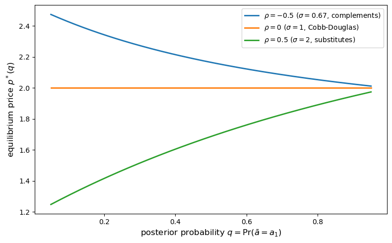
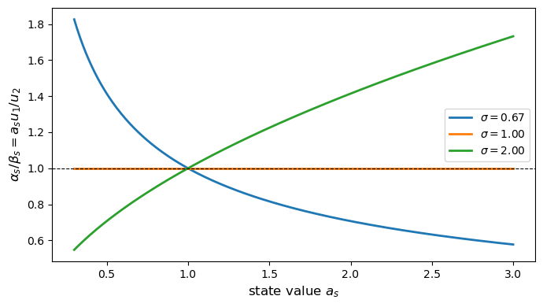
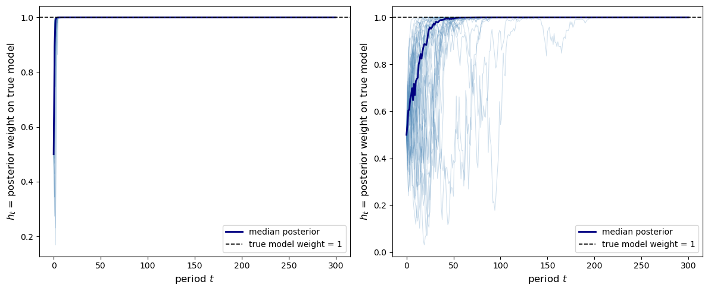
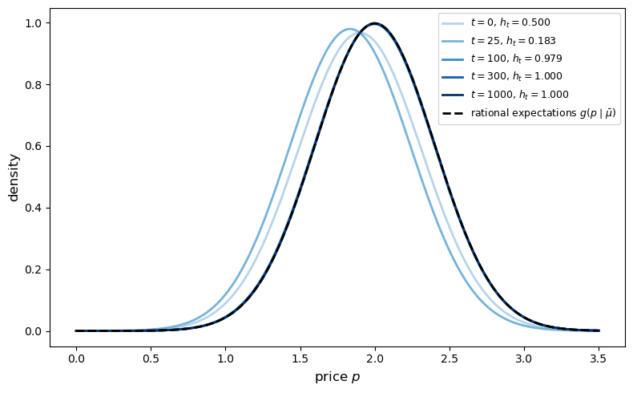
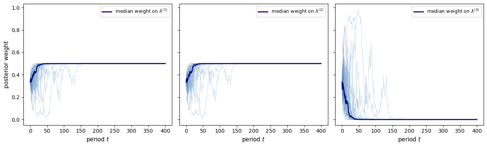
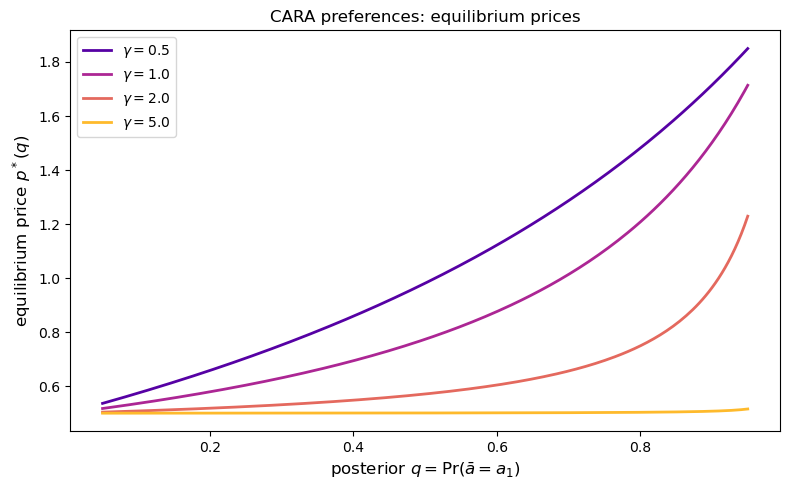
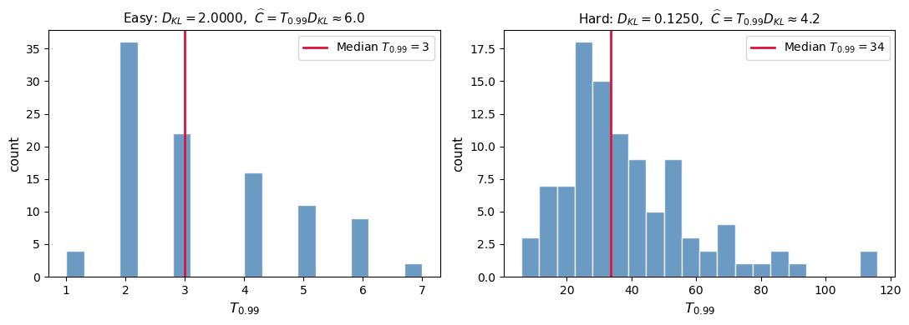
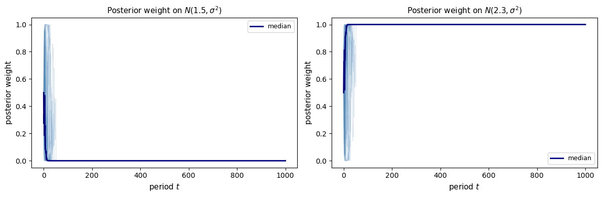
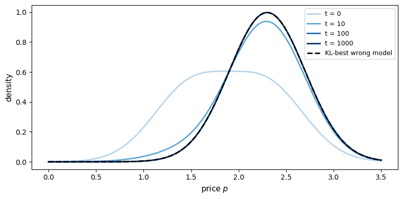

31. Information and Market Equilibrium#
31.1. Overview#
This lecture studies two questions about the informational role of prices posed and answered by Kihlstrom and Mirman [1975].
When do prices transmit inside information?
An informed insider observes a private signal correlated with an unknown state of the world and adjusts demand accordingly.
Equilibrium prices shift.
Under what conditions can an outside observer infer the insider’s posterior distribution from the equilibrium price?
Do Bayesian price expectations converge?
In a stationary stochastic exchange economy, an uninformed observer uses the history of market prices and Bayes’ Law to form beliefs about the economy’s structure and hence about its induced price distribution.
Do those expectations eventually agree with those of a fully informed observer?
Kihlstrom and Mirman’s answers rely on two classical ideas from statistics:
Blackwell sufficiency: a random variable \(\tilde{y}\) is said to be sufficient for a random variable \(\tilde{y}'\) with respect to an unknown state if knowing \(\tilde{y}\) gives all the information about the state that \(\tilde{y}'\) contains.
Bayesian consistency: as the sample grows, posterior beliefs eliminate models that imply the wrong price distribution, so even when structure is not identified from prices the posterior mass on the true reduced form still converges to one.
Important findings of Kihlstrom and Mirman [1975] are:
Equilibrium prices transmit inside information if and only if the map from the insider’s posterior distribution to the equilibrium price is one-to-one on the set of posteriors that can actually arise from the signal.
For the two-state case (\(S = 2\)), invertibility holds when the informed agent’s utility is homothetic and the elasticity of substitution is everywhere either below one or above one.
In the dynamic economy, as information accumulates, Bayesian price expectations converge to rational expectations, even when the deep structure is not identified from prices alone.
Note
Kihlstrom and Mirman [1975] use the terms “reduced form” and “structural” models in a way that careful econometricians do.
Reduced-form and structural models come in pairs.
To each structure or structural model there is a reduced form, or collection of reduced forms, underlying different possible regressions.
The lecture is organized as follows.
Set up the static two-commodity model and define equilibrium.
State the price-revelation theorem and the invertibility conditions.
Illustrate invertibility and its failure with numerical examples using CES and Cobb-Douglas preferences.
Introduce the dynamic stochastic economy and derive the Bayesian convergence result.
Simulate Bayesian learning from price observations.
This lecture builds on ideas in Blackwell’s Theorem on Comparing Experiments and Likelihood Ratio Processes and Bayesian Learning.
We start by importing some Python packages.
import numpy as np
import matplotlib.pyplot as plt
from scipy.optimize import brentq
from scipy.stats import norm
31.2. Setup#
31.2.1. Preferences, endowments, and the unknown state#
The economy has two goods.
Good 2 is the numeraire (price normalized to 1).
Good 1 trades at price \(p > 0\).
An unknown parameter \(\bar{a}\) affects the value of good 1.
Agent \(i\)’s expected utility from a bundle \((x_1^i, x_2^i)\) is
where \(P^i\) is agent \(i\)’s subjective probability distribution over the finite state space \(A = \{a_1, \ldots, a_S\}\).
Each agent starts with an endowment \(w^i\) of good 2 and a share \(\theta^i\) of the representative firm.
In the paper’s formal model, a single firm transforms good 2 into good 1 according to \(y_1 = f(y_2)\) with \(f' < 0\) and chooses production to maximize
The firm’s profit \(\pi\) is then distributed to households according to the shares \(\theta^i\).
Agent \(i\)’s budget constraint is
Agents maximize expected utility subject to their budget constraints.
A competitive equilibrium is a price \(\hat{p}\) that clears both markets simultaneously.
Under the maintained convexity assumptions equilibrium exists, and following Kihlstrom and Mirman [1975] we assume the equilibrium price is unique, so that we can write \(\hat p = p(\mu)\) as a well-defined function of the informed agent’s posterior.
For most of what follows, the production side matters only through the induced equilibrium price map, so when we turn to numerical illustrations we will suppress production and use a pure-exchange / portfolio interpretation to keep the calculations transparent.
31.2.2. The informed agent’s problem#
Suppose agent 1 (the insider) observes a private signal \(\tilde{y}\) correlated with \(\bar{a}\) before trading, where \(\tilde{y}\) takes values in a finite set \(Y\).
Before the signal arrives, agent 1 has prior beliefs \(\mu_0 = P^1\).
Upon observing \(\tilde{y} = y\), agent 1 updates to the posterior \(\mu_y = (\mu_{y1}, \ldots, \mu_{yS})\) via Bayes’ rule:
Because agent 1’s demand depends on \(\mu_y\), the new equilibrium price satisfies
Outside observers who see \(\hat{p}\) but not \(\tilde{y}\) can try to back out the insider’s posterior from the price.
Define the set of realized posteriors
The key question is whether the map \(\mu \mapsto p(\mu)\) is one-to-one on \(M\).
To answer that question, we now translate “information in prices” into Blackwell’s language of sufficiency.
31.3. Price revelation#
31.3.1. Blackwell sufficiency#
The price variable \(p(\mu_{\tilde{y}})\) accurately transmits the insider’s private information if observing the equilibrium price is just as informative about \(\bar{a}\) as observing the signal \(\tilde{y}\) directly.
In Blackwell’s language (Blackwell [1951] and Blackwell [1953]), this means \(p(\mu_{\tilde{y}})\) is sufficient for \(\tilde{y}\).
Definition 31.1 (Sufficiency)
A random variable \(\tilde{y}\) is sufficient for \(\tilde{y}'\) with respect to \(\bar{a}\) if there exists a conditional distribution \(P(y' \mid y)\), independent of \(\bar{a}\), such that
where \(\phi_a(y) = P(\tilde{y} = y \mid \bar{a} = a)\).
Thus, once \(\tilde{y}\) is known, \(\tilde{y}'\) provides no additional information about \(\bar{a}\).
Kihlstrom and Mirman [1975] show that
Lemma 31.1 (Posterior Sufficiency)
The posterior distribution \(\mu_{\tilde{y}}\) is a sufficient statistic for \(\tilde{y}\).
Proof. (Sketch) The posterior \(\mu_{\tilde{y}}\) satisfies
This identity says that once the posterior is known, conditioning on the original signal \(\tilde y\) does not change beliefs about \(\bar a\).
Equivalently, the conditional law of \(\tilde y\) given \(\mu_{\tilde y}\) is independent of \(\bar a\), so \(\mu_{\tilde y}\) is sufficient for \(\tilde y\) in Blackwell’s sense.
Now let’s think about the mapping from belief to price.
Theorem 31.1 (Price Revelation)
In the model outlined above, the price random variable \(p(\mu_{\tilde{y}})\) is sufficient for the random variable \(\tilde{y}\) if and only if the function \(p(P^1)\) is invertible on the set of prices
The logic is
The first arrow loses no information about \(\bar a\) by Lemma 31.1, and the theorem asks when the second arrow also loses no information.
The proof has two parts.
If \(p(\cdot)\) is one-to-one on \(M\), then observing the price is equivalent to observing the posterior itself because
This conditional distribution is independent of the state, so price is sufficient for the posterior; together with Lemma 31.1, price is therefore sufficient for the signal.
Conversely, if two different posteriors in \(M\) generated the same price, an observer of the price could not tell which posterior had occurred, and the paper shows formally that in this case the conditional distribution of the posterior given price would depend on the state, so price could not be sufficient.
Before turning to invertibility itself, it helps to keep in mind the two economic interpretations emphasized in the paper.
31.3.2. Two interpretations#
31.3.2.1. Insider trading in a stock market#
Good 1 is a risky asset with random return \(\bar{a}\); good 2 is “money”.
An insider’s demand reveals private information about the return.
If the invertibility condition holds, outside observers can read the insider’s posterior distribution – the useful information the insider’s signal carries about \(\bar a\) – from the equilibrium stock price.
31.3.2.2. Price as a quality signal#
Good 1 has uncertain quality \(\bar{a}\).
Experienced consumers (who have sampled the good) observe a signal correlated with quality and buy accordingly.
Uninformed consumers can infer quality from the market price, provided invertibility holds.
31.4. Invertibility and the elasticity of substitution#
When does the belief-to-price map fail to be invertible?
Theorem 31.2 shows that for a two-state economy (\(S = 2\)), the answer depends on the elasticity of substitution \(\sigma\) of agent 1’s utility function.
Before stating the theorem, it helps to see the two intermediate steps in the paper’s argument.
Lemma 31.2 (Same Price Implies Same Allocation)
Assume that \(u^i\) has continuous first partial derivatives and that \(u^i\) is quasi-concave.
Let \(p \in \mathcal{P}\).
If there exist two measures \(\mu^*\) and \(\mu'\) in \(M\) such that \(p(\mu^*, P^2, \ldots, P^n) = p(\mu', P^2, \ldots, P^n) = p\), then
Fix the beliefs of all agents except agent 1.
The lemma says that if two posterior beliefs \(\mu^*\) and \(\mu'\) for agent 1 both support the same equilibrium price \(p\), then they support the same equilibrium allocation for every trader.
The intuition is that when the price is unchanged, the demands of the uninformed traders are unchanged too, so market clearing forces the informed agent’s bundle to be unchanged as well.
This lemma lets us define the informed agent’s equilibrium bundle as a function of price alone:
Throughout, \(u^i_j\) denotes the partial derivative of \(u^i\) with respect to its \(j\)-th argument.
Whenever the informed agent consumes positive amounts of both goods, optimality of \(x(p)\) under posterior \(\mu\) gives the interior first-order condition
For a fixed price \(p\), the bundle \(x(p)\) is fixed too, so invertibility boils down to whether this equation admits a unique posterior \(\mu\).
Lemma 31.3 (Unique Posterior at a Given Price)
Assume that the first partial derivatives of \(u^1\) exist and that \(u^1\) is quasi-concave.
Also assume that agent 1 always consumes positive quantities of both goods.
Then \(p(P^1)\) is invertible on \(\mathcal{P}\) if for each \(p \in \mathcal{P}\) there exists a unique probability measure \(\mu \in M\) such that
If two different posteriors gave the same price, then by Lemma 31.2 they would share the same bundle \(x(p)\), contradicting uniqueness of the posterior that solves the first-order condition at that price.
31.4.1. The two-state first-order condition#
With \(S = 2\) and \(\mu = (q,\, 1-q)\), define
Then the first-order condition becomes
At a fixed price \(p\), the quantities \(\alpha_s(p)\) and \(\beta_s(p)\) are constants, so uniqueness of the posterior is the same as uniqueness of the scalar \(q\) solving this equation.
Theorem 31.2 (Invertibility Conditions)
Assume that the first partial derivatives of \(u^1\) exist and that \(u^1\) is quasi-concave and homothetic.
Also suppose that the informed agent always consumes positive quantities of both goods in all equilibrium allocations.
If \(S = 2\) and the elasticity of substitution of \(u^1\) is either always less than one or always greater than one, then \(p(P^1)\) is invertible on \(\mathcal{P}\).
If \(u^1\) is Cobb-Douglas (elasticity of substitution constant and equal to one), then \(p(P^1)\) is constant on \(\mathcal{P}\).
When \(\sigma = 1\) the income and substitution effects exactly cancel, so agent 1’s demand for good 1 does not respond to changes in beliefs about \(\bar{a}\).
Because the demand is unchanged, the market-clearing price is unchanged too, and the price reveals nothing about the insider’s signal.
31.4.2. CES utility#
For concreteness we work with a simplified example with the constant-elasticity-of-substitution (CES) utility function
whose elasticity of substitution is \(\sigma = 1/(1-\rho)\).
\(\rho \to 0\): Cobb-Douglas (\(\sigma = 1\)).
\(\rho < 0\): \(\sigma < 1\) (complements).
\(0 < \rho < 1\): \(\sigma > 1\) (substitutes).
Pertinent partial derivatives are
This CES example is only an illustration, because the theorem itself covers any homothetic utility with elasticity everywhere above one or everywhere below one.
With that example in hand, we can compute the equilibrium price directly as a function of the posterior.
31.4.3. Equilibrium price as a function of the posterior#
We focus on agent 1 as the only informed trader who absorbs one unit of good 1 at equilibrium (i.e., \(x_1 = 1\)).
Let \(W_1 = w^1 + \theta^1 \pi\) denote agent 1’s total wealth (endowment plus profit share).
Agent 1’s budget constraint then reduces to \(x_2 = W_1 - p\), and the equilibrium price is the unique \(p \in (0, W_1)\) satisfying the first-order condition
For Cobb-Douglas utility (\(\sigma = 1\)), the first-order condition becomes \(p = W_1 - p\), giving \(p^* = W_1/2\) regardless of the posterior \(q\), confirming that no information is transmitted through the price in the Cobb-Douglas case.
We compute first-order conditions numerically below.
def ces_derivatives(c1, c2, ρ):
"""
Return CES marginal utilities.
Use the Cobb-Douglas limit near rho = 0.
"""
if abs(ρ) < 1e-4:
u1 = 0.5 * np.sqrt(c2 / c1)
u2 = 0.5 * np.sqrt(c1 / c2)
else:
common = (c1**ρ + c2**ρ)**(1 / ρ - 1)
u1 = common * c1**(ρ - 1)
u2 = common * c2**(ρ - 1)
return u1, u2
def eq_price(q, a1, a2, W1, ρ):
"""Return the equilibrium price for posterior q."""
def residual(p):
x2 = W1 - p
u1_s1, u2_s1 = ces_derivatives(a1, x2, ρ)
u1_s2, u2_s2 = ces_derivatives(a2, x2, ρ)
lhs = p * (q * u2_s1 + (1 - q) * u2_s2)
rhs = q * a1 * u1_s1 + (1 - q) * a2 * u1_s2
return lhs - rhs
try:
return brentq(residual, 1e-6, W1 - 1e-6, xtol=1e-10)
except ValueError:
return np.nan
a1, a2 = 2.0, 0.5 # state values (a1 > a2)
W1 = 4.0
q_grid = np.linspace(0.05, 0.95, 200)
ρ_values = [-0.5, 0.0, 0.5]
ρ_labels = [
r"$\rho = -0.5$ ($\sigma = 0.67$, complements)",
r"$\rho = 0$ ($\sigma = 1$, Cobb-Douglas)",
r"$\rho = 0.5$ ($\sigma = 2$, substitutes)",
]
fig, ax = plt.subplots(figsize=(8, 5))
for ρ, label in zip(ρ_values, ρ_labels):
prices = [eq_price(q, a1, a2, W1, ρ) for q in q_grid]
ax.plot(q_grid, prices, label=label, lw=2)
ax.set_xlabel(r"posterior probability $q = \Pr(\bar{a} = a_1)$", fontsize=12)
ax.set_ylabel("equilibrium price $p^*(q)$", fontsize=12)
ax.legend(fontsize=10)
plt.tight_layout()
plt.show()

Fig. 31.1 equilibrium price vs posterior#
The plot confirms Theorem 31.2.
For CES with \(\sigma \neq 1\), the equilibrium price is strictly monotone in \(q\).
An outside observer who knows the equilibrium map \(p^*(\cdot)\) can therefore invert the price uniquely to recover \(q\), so the inside information is fully transmitted.
For Cobb-Douglas (\(\sigma = 1\)), the price is flat in \(q\), so information is never transmitted through the market.
p_cd = [eq_price(q, a1, a2, W1, ρ=0.0) for q in q_grid]
print(f"Cobb-Douglas (rho=0): min p* = {min(p_cd):.6f}, "
f"max p* = {max(p_cd):.6f}, "
f"range = {max(p_cd)-min(p_cd):.2e}")
print(f"Analytical CD price = W1/2 = {W1/2:.6f}")
Cobb-Douglas (rho=0): min p* = 2.000000, max p* = 2.000000, range = 8.88e-16
Analytical CD price = W1/2 = 2.000000
Every entry equals \(W_1/2 = 2.0\) exactly, confirming analytically that the Cobb-Douglas equilibrium price is independent of \(q\) and of the state values \(a_1, a_2\).
The numerical plot shows monotonicity, and the next subsection connects that pattern back to the proof of Theorem 31.2.
31.4.4. Why monotonicity depends on \(\sigma\)#
Fix a price \(p\) and treat \(\alpha_s(p)\) and \(\beta_s(p)\) as constants.
The right-hand side of the two-state first-order condition
is then a function of \(q\) alone, with derivative
So the sign is determined by \(\alpha_1 \beta_2 - \alpha_2 \beta_1\), and if that sign is constant then for each fixed price there is at most one posterior weight \(q\) consistent with the first-order condition, which is exactly what Theorem 31.2 requires.
Using
one can show
For the CES specification, this derivative is positive when \(\sigma > 1\), negative when \(\sigma < 1\), and zero when \(\sigma = 1\).
In other words, for CES utility the ratio \(\alpha_s / \beta_s\) moves monotonically with the state value \(a_s\) unless \(\sigma = 1\), which makes the fixed-price first-order-condition expression monotone in \(q\) and in turn delivers invertibility.
The vanishing derivative in the Cobb-Douglas case means the marginal rate of substitution is independent of \(a_s\), so the informed agent’s demand, and hence the equilibrium price, does not respond to changes in beliefs.
Let us visualize the ratio \(\alpha_s / \beta_s\) as a function of \(a_s\) for different values of \(\sigma\):
a_vals = np.linspace(0.3, 3.0, 300)
x1_fix, x2_fix = 1.0, 1.0
fig, ax = plt.subplots(figsize=(7, 4))
for ρ in [-0.5, -1e-6, 0.5]:
σ = 1 / (1 - ρ) if abs(ρ) > 1e-8 else 1.0
ratios = []
for a in a_vals:
u1, u2 = ces_derivatives(a * x1_fix, x2_fix, ρ)
ratios.append(a * u1 / u2)
ax.plot(a_vals, ratios, label=rf"$\sigma = {σ:.2f}$", lw=2)
ax.set_xlabel(r"state value $a_s$", fontsize=12)
ax.set_ylabel(r"$\alpha_s / \beta_s = a_s u_1 / u_2$", fontsize=12)
ax.axhline(y=1.0, color="black", lw=0.8, ls="--")
ax.legend(fontsize=10)
plt.tight_layout()
plt.show()

Fig. 31.2 marginal rate of substitution#
When \(\sigma = 1\) the ratio is constant across all \(a_s\) values, so information about the state has no effect on the marginal rate of substitution.
For \(\sigma < 1\) the ratio is decreasing in \(a_s\), and for \(\sigma > 1\) it is increasing, making the equilibrium price strictly monotone in the posterior \(q\) in both cases.
The static analysis asks whether a current price reveals current private information, whereas the next section asks what a whole history of prices reveals over time.
31.5. Bayesian price expectations in a dynamic economy#
We now turn to a question addressed in Section 3 of Kihlstrom and Mirman [1975].
31.5.1. A stochastic exchange economy#
Time is discrete: \(t = 1, 2, \ldots\)
In each period \(t\):
Consumer \(i\) receives a random endowment \(\omega_i^t\).
Markets open; competitive prices \(p^t = p(\omega^t)\) clear all markets.
Consumers trade and consume.
The endowment vectors \(\{\tilde{\omega}^t\}\) are i.i.d. with density \(f(\omega^t \mid \lambda)\), where \(\lambda = (\lambda_1, \ldots, \lambda_K)\) is a structural parameter vector (of dimension \(K\)) that is fixed but unknown.
The equilibrium price at time \(t\) is a deterministic function of \(\omega^t\), so \(\{p^t\}\) is also i.i.d.
For any measurable price set \(P\), let
Then
The induced price density is denoted by \(g(p^t \mid \lambda)\).
For a given structure \(\lambda\), this density is the observable implication of the model, and when several structures imply the same density we group them into a single reduced-form class.
The next issue is therefore what an observer can and cannot infer about the structure from price data alone.
31.5.2. The identification problem#
Because price observations identify only the induced price density \(g(\cdot \mid \lambda)\), and because the structural-to-reduced-form map \(\lambda \mapsto g(\cdot \mid \lambda)\) may be many-to-one, price data may identify only a reduced-form class rather than the exact structure.
In particular, it may be impossible to recover \(\lambda\) from \(g(p \mid \lambda)\) even with infinite price data.
To handle this, partition \(\Lambda\) into equivalence classes \(\mu\) such that \(\lambda \in \mu\) and \(\lambda' \in \mu\) whenever \(g(p \mid \lambda) = g(p \mid \lambda')\) for all \(p\).
The equivalence class \(\mu\) containing the true \(\lambda\) is the reduced form relevant for price data.
An observer who knows the infinite price history learns \(\mu\) but not necessarily \(\lambda\).
Once that distinction is clear, Bayesian updating can be written down directly.
31.5.3. Bayesian updating#
An uninformed observer begins with a prior \(h(\lambda)\) over \(\lambda \in \Lambda\).
If the observer could see endowments directly, the posterior would be
and the paper appeals to a Bayesian consistency result to conclude that this posterior concentrates on the true structure \(\bar \lambda\).
After observing the price sequence \((p^1, \ldots, p^t)\), the observer’s Bayesian posterior is
Price data cannot distinguish structures inside the same reduced-form class.
Indeed, if \(\lambda\) and \(\lambda'\) belong to the same class \(\mu\), then \(g(\cdot \mid \lambda) = g(\cdot \mid \lambda')\), so
for every sample history, so the relative odds within an observationally equivalent class never change.
At time \(t\), the observer’s price expectations for the next period are
31.5.4. The convergence theorem#
Theorem 31.3 (Bayesian Convergence)
Let \(\bar\lambda\) be the true structural parameter and \(\bar\mu\) the reduced form that contains \(\bar\lambda\).
Assume the prior assigns positive probability to the reduced-form class \(\bar\mu\).
Define the posterior mass on a reduced-form class by
Because all structures inside a class imply the same \(g(\cdot \mid \lambda)\), the predictive density can equivalently be written as
Then
with probability one.
Consequently,
which equals the rational-expectations price distribution for a fully informed observer.
Note
Note that the theorem only requires the prior to assign positive probability to the reduced-form class \(\bar\mu\) that contains the true structure \(\bar\lambda\).
This is implied by, but weaker than, assigning positive probability to the true structural parameter \(\bar\lambda\) itself.
A prior could place zero mass on \(\bar\lambda\) while still placing positive mass on other structures inside \(\bar\mu\).
The important distinction is that price observers need not learn \(\bar \lambda\) itself.
They only learn which reduced-form class is correct.
That is enough for forecasting because every \(\lambda \in \bar \mu\) generates the same price density \(g(\cdot \mid \bar \mu)\).
Rational price expectations emerge from learning the reduced form, not from identifying every structural detail of the economy.
Here “rational expectations” means that the observer’s predictive distribution for next period’s price matches the objective price distribution generated by the true reduced form.
Let’s now turn to a simple simulation.
31.6. Simulating Bayesian learning from prices#
We illustrate the theorem with a two-state example.
Two possible reduced forms \(\mu_1\) and \(\mu_2\) generate prices \(p^t \sim N(\bar{p}_i, \sigma_p^2)\) for \(i = 1, 2\) respectively.
The observer knows the two possible price distributions (the reduced forms) but not which one governs the data.
This is a Bayesian model selection problem we have seen in Likelihood Ratio Processes and Bayesian Learning.
With a prior \(h_0\) on \(\mu_1\) and the observed price \(p^t\), the posterior weight on \(\mu_1\) after period \(t\) is
We consider a numerical example with two normal distributions with different means
def simulate_bayesian_learning(
p_bar_true, p_bar_alt, σ_p, T, h0, n_paths, seed=42
):
"""Simulate posterior learning between two Gaussian reduced forms."""
rng = np.random.default_rng(seed)
h_paths = np.zeros((n_paths, T + 1))
h_paths[:, 0] = h0
for path in range(n_paths):
h = h0
prices = rng.normal(p_bar_true, σ_p, size=T)
for t, p in enumerate(prices):
g_true = norm.pdf(p, loc=p_bar_true, scale=σ_p)
g_alt = norm.pdf(p, loc=p_bar_alt, scale=σ_p)
denom = h * g_true + (1 - h) * g_alt
h = h * g_true / denom
h_paths[path, t + 1] = h
return h_paths
def plot_bayesian_learning(h_paths, p_bar_true, p_bar_alt, ax):
"""Plot posterior beliefs over time."""
T = h_paths.shape[1] - 1
t_grid = np.arange(T + 1)
for path in h_paths:
ax.plot(t_grid, path, alpha=0.25, lw=0.8, color="steelblue")
median_path = np.median(h_paths, axis=0)
ax.plot(t_grid, median_path, color="navy", lw=2, label="median posterior")
ax.axhline(
y=1.0,
color="black",
ls="--",
lw=1.2,
label="true model weight = 1",
)
ax.set_xlabel("period $t$", fontsize=12)
ax.set_ylabel(r"$h_t$ = posterior weight on true model", fontsize=12)
ax.legend(fontsize=10)
We consider two cases, one that is easy to learn and another one that is harder to learn, using \(T = 300\) periods, \(n = 40\) simulated paths, a diffuse prior \(h_0 = 0.5\), and common standard deviation \(\sigma_p = 0.4\).
Easy case: true model \(N(2.0,\, 0.4^2)\), alternative \(N(1.2,\, 0.4^2)\).
Hard case: true model \(N(2.0,\, 0.4^2)\), alternative \(N(1.8,\, 0.4^2)\).
Whether easy or hard to learn depends on “how close” the true distribution is compared to the alternative hypothesis.
T = 300
h0 = 0.5 # diffuse prior
n_paths = 40
σ_p = 0.4
fig, axes = plt.subplots(1, 2, figsize=(12, 5))
# Distinct reduced forms
p_bar_true, p_bar_alt = 2.0, 1.2
h_paths = simulate_bayesian_learning(p_bar_true, p_bar_alt, σ_p, T, h0, n_paths)
plot_bayesian_learning(h_paths, p_bar_true, p_bar_alt, axes[0])
# Similar reduced forms
p_bar_true, p_bar_alt = 2.0, 1.8
h_paths_hard = simulate_bayesian_learning(
p_bar_true, p_bar_alt, σ_p, T, h0, n_paths
)
plot_bayesian_learning(h_paths_hard, p_bar_true, p_bar_alt, axes[1])
plt.tight_layout()
plt.show()

Fig. 31.3 bayesian learning across paths#
In both panels the posterior weight on the true model converges to 1 with probability one, though convergence is slower when the two price distributions are similar (right panel).
31.6.1. Price expectations vs. rational expectations#
We now verify that the observer’s price expectations converge to the rational-expectations distribution \(g(p \mid \bar\mu)\).
We use the parameterization of the “hard-to-learn” example above (\(\bar{p}_{\text{true}} = 2.0\), \(\bar{p}_{\text{alt}} = 1.8\), \(\sigma_p = 0.4\)), extending to \(T = 1{,}000\) periods with a single simulated path and prior \(h_0 = 0.5\)
def price_expectation(h_t, p_bar_true, p_bar_alt, σ_p, p_grid):
"""Return the predictive price density at posterior weight h_t."""
return (
h_t * norm.pdf(p_grid, loc=p_bar_true, scale=σ_p)
+ (1 - h_t) * norm.pdf(p_grid, loc=p_bar_alt, scale=σ_p)
)
p_bar_true, p_bar_alt = 2.0, 1.8
σ_p = 0.4
n_paths = 1
T_long = 1000
h_paths_long = simulate_bayesian_learning(
p_bar_true, p_bar_alt, σ_p, T_long, h0=0.5, n_paths=n_paths, seed=7
)
p_grid = np.linspace(0.0, 3.5, 300)
re_density = norm.pdf(p_grid, loc=p_bar_true, scale=σ_p)
fig, ax = plt.subplots(figsize=(8, 5))
snapshots = [0, 25, 100, 300, 1000]
palette = plt.cm.Blues(np.linspace(0.3, 1.0, len(snapshots)))
for t_snap, col in zip(snapshots, palette):
h_t = h_paths_long[0, t_snap]
dens = price_expectation(h_t, p_bar_true, p_bar_alt, σ_p, p_grid)
ax.plot(
p_grid,
dens,
color=col,
lw=2,
label=rf"$t = {t_snap}$, $h_t = {h_t:.3f}$",
)
ax.plot(p_grid, re_density, "k--", lw=2,
label=r"rational expectations $g(p \mid \bar{\mu})$")
ax.set_xlabel("price $p$", fontsize=12)
ax.set_ylabel("density", fontsize=12)
ax.legend(fontsize=9)
plt.tight_layout()
plt.show()

Fig. 31.4 price distribution convergence#
The sequence of predictive densities (shades of blue) converges to the rational-expectations density (dashed black line) as experience accumulates.
This illustrates Theorem 31.3.
We can now sharpen the point by looking at a case in which the reduced form is learned but the underlying structure is not.
31.6.2. Learning the reduced form without identifying the structure#
The convergence result is particularly striking because the observer converges to rational expectations even when the underlying structure \(\lambda\) is not identified by prices.
To illustrate this, consider a case with three possible structures \(\lambda^{(1)}, \lambda^{(2)}, \lambda^{(3)}\) but only two reduced forms \(\mu_1 = \{\lambda^{(1)}, \lambda^{(2)}\}\) and \(\mu_2 = \{\lambda^{(3)}\}\) (because \(\lambda^{(1)}\) and \(\lambda^{(2)}\) generate the same price distribution).
We continue with the hard-to-learn parameterization, so the three structures have price means \(\bar{p}_1 = \bar{p}_2 = 2.0\) and \(\bar{p}_3 = 1.8\), with common standard deviation \(\sigma_p = 0.4\), a uniform prior \(h_0 = (1/3, 1/3, 1/3)\), and \(T = 400\) periods over \(30\) paths.
The true structure is \(\lambda^{(1)}\).
def simulate_learning_3struct(
T, h0_vec, p_bar_vec, σ_p, true_idx, n_paths, seed=0
):
"""Simulate learning with three structures and two reduced forms."""
rng = np.random.default_rng(seed)
h_paths = np.zeros((n_paths, T + 1, 3))
h_paths[:, 0, :] = h0_vec
for path in range(n_paths):
h = np.array(h0_vec, dtype=float)
prices = rng.normal(p_bar_vec[true_idx], σ_p, size=T)
for t, p in enumerate(prices):
likelihoods = norm.pdf(p, loc=p_bar_vec, scale=σ_p)
h = h * likelihoods
h /= h.sum()
h_paths[path, t + 1, :] = h
return h_paths
# Structures 0 and 1 share the same reduced form
p_bar_vec = np.array([2.0, 2.0, 1.8])
h0_vec = np.array([1 / 3, 1 / 3, 1 / 3])
σ_p = 0.4
T = 400
true_idx = 0 # Structure 0 is observationally equivalent to 1
h_paths_3 = simulate_learning_3struct(
T, h0_vec, p_bar_vec, σ_p, true_idx, n_paths=30
)
t_grid = np.arange(T + 1)
fig, axes = plt.subplots(1, 3, figsize=(13, 4), sharey=True)
struct_labels = [
r"$\lambda^{(1)}$",
r"$\lambda^{(2)}$",
r"$\lambda^{(3)}$",
]
for k, (ax, label) in enumerate(zip(axes, struct_labels)):
for path in h_paths_3:
ax.plot(t_grid, path[:, k], alpha=0.25, lw=0.8, color="steelblue")
ax.plot(t_grid, np.median(h_paths_3[:, :, k], axis=0),
color="navy", lw=2, label=f"median weight on {label}")
ax.set_xlabel("period $t$", fontsize=11)
ax.legend(fontsize=9)
axes[0].set_ylabel("posterior weight", fontsize=11)
plt.tight_layout()
plt.show()

Fig. 31.5 learning with non-identification#
The observer correctly rules out \(\lambda^{(3)}\) (the wrong reduced form) with probability one, but cannot distinguish \(\lambda^{(1)}\) from \(\lambda^{(2)}\) because they generate an identical price distribution.
Nevertheless, the observer’s price expectations converge to rational expectations because both structures imply the same reduced form \(\bar\mu\).
31.7. Exercises#
Exercise 31.1
CARA portfolio utility and the stock-market interpretation.
Consider a two-state economy (\(a_1 = 2\), \(a_2 = 0.5\)) where the informed agent has CARA (constant absolute risk aversion) preferences over portfolio wealth:
The agent chooses \(x_1\) to maximize
subject to the budget constraint \(p\,x_1 + x_2 = w\).
Total supply of good 1 is \(X_1 = 1\).
Derive the first-order condition for the informed agent’s optimal \(x_1\).
Use the market-clearing condition \(x_1 = 1\) (the informed agent absorbs the entire supply) to obtain an implicit equation for the equilibrium price \(p^*(q)\), and solve it numerically for \(q \in (0,1)\) and several values of \(\gamma\).
Show analytically that \(p^*(q)\) admits the closed form
\[ p^*(q) = \frac{a_2 + R(q,\gamma)\, a_1}{1 + R(q,\gamma)}, \qquad R(q,\gamma) = \frac{q}{1-q}\, e^{-\gamma(a_1-a_2)}, \]and verify that \(p^*(q)\) is strictly increasing in \(q\).
Solution
For the first-order condition, define \(W_s = w + (a_s - p)\,x_1\) for \(s = 1, 2\).
Then the FOC is
or equivalently (dividing by \(\gamma\) and rearranging)
Setting \(x_1 = 1\) (the informed agent absorbs all supply), this becomes a scalar root-finding problem in \(p\):
from scipy.optimize import brentq
def F_cara(p, q, a1, a2, γ, x1=1.0):
"""Residual for the CARA equilibrium condition."""
return (q * (a1 - p) * np.exp(-γ * (a1 - p) * x1)
- (1 - q) * (p - a2) * np.exp(γ * (p - a2) * x1))
a1, a2 = 2.0, 0.5
q_grid = np.linspace(0.05, 0.95, 200)
γ_values = [0.5, 1.0, 2.0, 5.0]
colors_sol = plt.cm.plasma(np.linspace(0.15, 0.85, len(γ_values)))
fig, ax = plt.subplots(figsize=(8, 5))
for γ, color in zip(γ_values, colors_sol):
p_eq = [brentq(F_cara, a2, a1,
args=(q, a1, a2, γ))
for q in q_grid]
ax.plot(q_grid, p_eq, lw=2, color=color,
label=rf"$\gamma = {γ}$")
ax.set_xlabel(r"posterior $q = \Pr(\bar a = a_1)$", fontsize=12)
ax.set_ylabel("equilibrium price $p^*(q)$", fontsize=12)
ax.set_title("CARA preferences: equilibrium prices", fontsize=12)
ax.legend(fontsize=10)
plt.tight_layout()
plt.show()

The price is strictly increasing in \(q\) for every \(\gamma > 0\).
For the closed form, start from the FOC at \(x_1 = 1\), divide both sides by \((a_1 - p)(p - a_2)\), and combine the exponentials:
Rearranging gives
and solving the resulting linear equation in \(p\) yields
Since \(R(q,\gamma)\) is strictly increasing in \(q\) and \(dp^*/dR = (a_1 - a_2)/(1 + R)^2 > 0\), the equilibrium price \(p^*(q)\) is strictly increasing in \(q\).
This exercise uses the stock-market interpretation emphasized by Kihlstrom and Mirman [1975].
Portfolio wealth is \(W = x_2 + \bar{a}\, x_1\), so \(a x_1\) and \(x_2\) are perfect substitutes in each state.
Hence the elasticity of substitution between the two arguments of \(u(a x_1, x_2)\) is infinite, corresponding to the \(\sigma > 1\) side of Theorem 31.2.
The difference is that this example is not the full equilibrium model the theorem analyzes, but rather a partial equilibrium model with a single informed agent and a fixed supply of the risky asset.
Exercise 31.2
In the Bayesian learning simulation, the speed of convergence to rational expectations is determined by the Kullback-Leibler divergence between the two reduced forms.
The KL divergence \(D_{KL}(\mu_1 \| \mu_2)\) from \(g(\cdot \mid \mu_1)\) to \(g(\cdot \mid \mu_2)\), for two normal distributions with means \(\bar{p}_1\) and \(\bar{p}_2\) and common variance \(\sigma_p^2\), is
which is symmetric in the two means under equal variances.
For the “easy” case (\(\bar{p}_1 = 2.0\), \(\bar{p}_2 = 1.2\)) and the “hard” case (\(\bar{p}_1 = 2.0\), \(\bar{p}_2 = 1.8\)), compute \(D_{KL}\) for \(\sigma_p = 0.4\).
Re-run the simulations from the lecture for both cases with \(n=100\) paths. For each path compute the first period \(T_{0.99}\) at which \(h_t \geq 0.99\). Plot histograms of \(T_{0.99}\) for both cases.
How does the median \(T_{0.99}\) scale with \(D_{KL}\)? Verify numerically that roughly \(T_{0.99} \approx C / D_{KL}\) for some constant \(C\).
Solution
Here is one solution:
σ_p = 0.4
def kl_normal(p1, p2, σ):
"""Return the KL divergence for N(p1, σ^2) and N(p2, σ^2)."""
return (p1 - p2)**2 / (2 * σ**2)
cases = [("Easy", 2.0, 1.2), ("Hard", 2.0, 1.8)]
for name, p1, p2 in cases:
kl = kl_normal(p1, p2, σ_p)
print(f"{name} case: D_KL = {kl:.4f}")
n_paths = 100
fig, axes = plt.subplots(1, 2, figsize=(11, 4))
for ax, (name, p1, p2) in zip(axes, cases):
kl = kl_normal(p1, p2, σ_p)
paths = simulate_bayesian_learning(p1, p2, σ_p, T=2000,
h0=0.5, n_paths=n_paths, seed=42)
# First period with posterior >= 0.99
T99 = []
for path in paths:
idx = np.where(path >= 0.99)[0]
T99.append(idx[0] if len(idx) > 0 else 2001)
median_T = np.median(T99)
ax.hist(T99, bins=20, color="steelblue", edgecolor="white", alpha=0.8)
ax.axvline(median_T, color="crimson", lw=2,
label=fr"Median $T_{{0.99}} = {median_T:.0f}$")
ax.set_title(
f"{name}: $D_{{KL}} = {kl:.4f}$, "
fr"$\widehat C = T_{{0.99}} D_{{KL}} \approx {median_T * kl:.1f}$",
fontsize=11
)
ax.set_xlabel(r"$T_{0.99}$", fontsize=12)
ax.set_ylabel("count", fontsize=11)
ax.legend(fontsize=10)
plt.tight_layout()
plt.show()
Easy case: D_KL = 2.0000
Hard case: D_KL = 0.1250

The median \(T_{0.99}\) scales as approximately \(C/D_{KL}\), confirming that learning is faster when the two reduced forms are more easily distinguished (large \(D_{KL}\)).
Exercise 31.3
Theorem 31.3 requires the prior to assign positive probability to the true reduced-form class \(\bar\mu\), equivalently to some structure that generates the true price distribution \(g(\cdot \mid \bar\mu)\).
In this exercise the true reduced form itself is excluded from the prior support, so we investigate what happens when no model in the prior generates the true price distribution.
Simulate \(T = 1,000\) periods of prices from \(N(2.0, 0.4^2)\) but use a prior that places equal weight on two wrong models: \(N(1.5, 0.4^2)\) and \(N(2.3, 0.4^2)\).
Plot the posterior weight on each model over time.
Discuss your findings.
Solution
Here is one solution:
def simulate_misspecified(
T, p_bar_true, p_bar_wrong, σ_p, h0, n_paths, seed=0
):
"""Simulate learning under a misspecified two-model prior."""
rng = np.random.default_rng(seed)
h_paths = np.zeros((n_paths, T + 1, 2))
h_paths[:, 0, :] = h0
for path in range(n_paths):
h = np.array(h0, dtype=float)
prices = rng.normal(p_bar_true, σ_p, size=T)
for t, price in enumerate(prices):
likes = norm.pdf(price, loc=p_bar_wrong, scale=σ_p)
h = h * likes
h /= h.sum()
h_paths[path, t + 1, :] = h
return h_paths
def predictive_density(weights, means, σ_p, p_grid):
"""Return the predictive density under the current posterior weights."""
density = np.zeros_like(p_grid)
for weight, mean in zip(weights, means):
density += weight * norm.pdf(p_grid, loc=mean, scale=σ_p)
return density
T = 1000
p_true = 2.0
p_wrong = np.array([1.5, 2.3])
σ_p = 0.4
h0 = np.array([0.5, 0.5])
n_paths = 30
h_misspec = simulate_misspecified(T, p_true, p_wrong, σ_p, h0, n_paths)
kl_vals = (p_true - p_wrong)**2 / (2 * σ_p**2)
for mean, kl in zip(p_wrong, kl_vals):
print(f"KL(true || N({mean:.1f}, σ^2)) = {kl:.4f}")
t_grid = np.arange(T + 1)
fig, axes = plt.subplots(1, 2, figsize=(12, 4))
labels = [r"$N(1.5, \sigma^2)$", r"$N(2.3, \sigma^2)$"]
for ax, k, label in zip(axes, [0, 1], labels):
for path in h_misspec:
ax.plot(t_grid, path[:, k], alpha=0.2, lw=0.8, color="steelblue")
ax.plot(t_grid, np.median(h_misspec[:, :, k], axis=0),
color="navy", lw=2, label="median")
ax.set_title(f"Posterior weight on {label}", fontsize=11)
ax.set_xlabel("period $t$", fontsize=11)
ax.set_ylabel("posterior weight", fontsize=11)
ax.legend(fontsize=9)
plt.tight_layout()
plt.show()
# Predictive density and mean along the median posterior path
median_path = np.median(h_misspec, axis=0)
p_grid = np.linspace(0.0, 3.5, 300)
closer_idx = np.argmin(kl_vals)
fig, ax = plt.subplots(figsize=(8, 4))
colors = plt.cm.Blues(np.linspace(0.3, 1.0, 4))
for t_snap, color in zip([0, 10, 100, T], colors):
dens = predictive_density(median_path[t_snap], p_wrong, σ_p, p_grid)
ax.plot(p_grid, dens, color=color, lw=2, label=f"t = {t_snap}")
ax.plot(
p_grid,
norm.pdf(p_grid, loc=p_wrong[closer_idx], scale=σ_p),
"k--",
lw=2,
label="KL-best wrong model",
)
ax.set_xlabel("price $p$", fontsize=11)
ax.set_ylabel("density", fontsize=11)
ax.legend(fontsize=9)
plt.tight_layout()
plt.show()
pred_mean = np.median(
h_misspec[:, :, 0] * p_wrong[0] + h_misspec[:, :, 1] * p_wrong[1], axis=0
)
print(f"True mean: {p_true}")
print(f"Predictive mean at T={T}: {pred_mean[-1]:.4f}")
print(f"Closer misspecified mean: {p_wrong[np.argmin(kl_vals)]:.1f}")
KL(true || N(1.5, σ^2)) = 0.7812
KL(true || N(2.3, σ^2)) = 0.2812
True mean: 2.0
Predictive mean at T=1000: 2.3000
Closer misspecified mean: 2.3


Here
so the model with mean \(2.3\) is the KL-best approximation among the two wrong models, and in the simulation posterior weight concentrates on that model.
Posterior odds are cumulative likelihood ratios.
If we compare the two wrong Gaussian models \(f\) and \(g\), then under the true distribution \(h\) the average log likelihood ratio satisfies
So if \(f\) is KL-closer to \(h\) than \(g\) is, \(\log L_t\) has positive drift and posterior odds tilt toward \(f\).